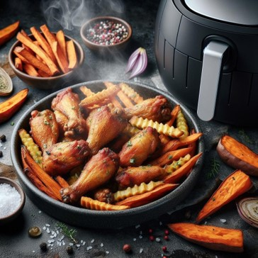

Airfryer Wingsit
Ainekset:
- 12 kpl kanansiipiä
- 2 rkl oliiviöljyä
- 1 tl suolaa
- 1 tl mustapippuria
- 1 tl valkosipulijauhetta
- 1 tl paprikajauhetta
- ½ tl cayennepippuria (lisää enemmän, jos haluat tulisempia siipiä)
- 2 rkl maissitärkkelystä (tai perunatärkkelystä)
Valmistusohjeet:
- Aloita valmistamalla kanansiivet. Voit käyttää kokonaisia siipiä tai erottaa ne kolmeksi osaksi (siiven kärki, siiven keskiosa ja siivenpää). Kuivaa siivet talouspaperilla ylimääräisen kosteuden poistamiseksi.
- Laita kanansiivet kulhoon ja lisää oliiviöljy. Sekoita hyvin, jotta kaikki siivet saavat öljyä pintaansa.
- Yhdistä suola, mustapippuri, valkosipulijauhe, paprikajauhe ja cayennepippuri pienessä kulhossa. Sekoita mausteet tasaisesti.
- Ripottele maissitärkkelys tai perunatärkkelys kanansiipien päälle ja sekoita, kunnes siivet ovat tasaisesti päällystettyjä.
- Aseta kanansiivet airfryeriin yhdessä kerroksessa, jotta ilma kiertää niiden ympärillä tasaisesti.
- Paista kanansiipiä 25-30 minuuttia tai kunnes ne ovat kypsiä ja rapeita. Voit tarvittaessa kääntää siipiä puolivälissä paistoaikaan varmistaaksesi tasaisen kypsymisen.
- Kun siivet ovat valmiita, tarjoile ne heti ja nauti esimerkiksi ranch-kastikkeen tai sinappikastikkeen kera.

Nauti herkullisista ja rapeista kanansiivistä, jotka on valmistettu kätevästi airfryerillä!